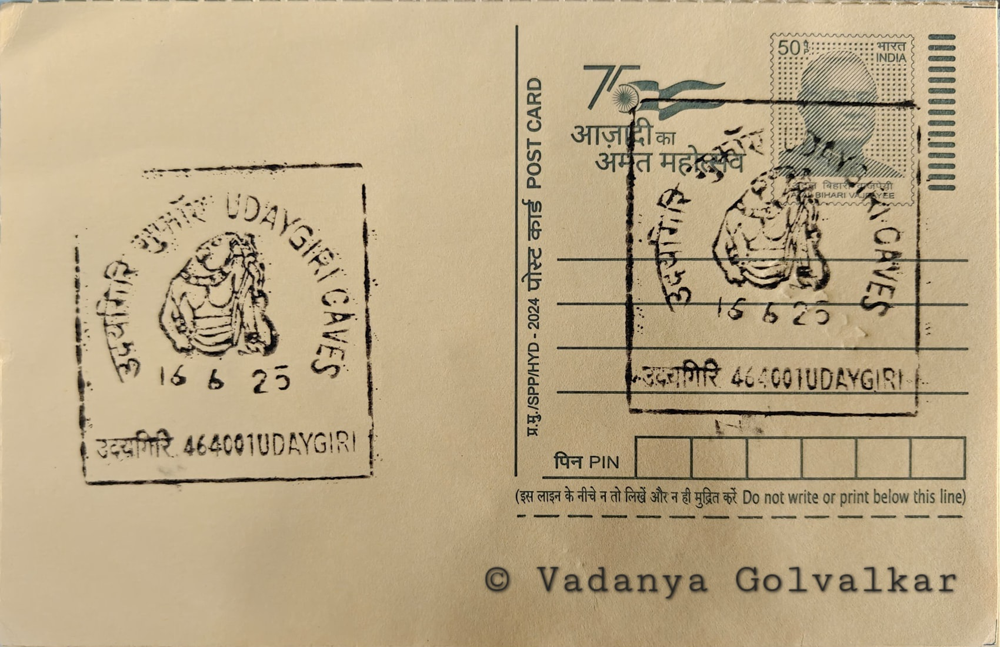

Udaygiri Caves-Varaha (Boar) Carving
उदयगिरि गुफावां - वराह (सुंगर) की नक्काशी


The name Udayagiri, meaning "hill of sunrise" in Sanskrit, reflects the site's long-noted relationship with the sun's movement across the sky, a connection scholars have since shown was built into the hill's layout rather than coincidental. Local tradition and the accumulated inscriptions at the site tie its rise to prominence directly to the Gupta court at nearby Vidisha, which used the hill as a setting for royally sponsored religious imagery rather than as an isolated hermit retreat. Unlike many rock-cut sites that grew organically over centuries, Udayagiri's core caves were conceived and executed within a few decades, giving the hill a unified character rare among India's rock-cut complexes.
Udayagiri comprises roughly twenty numbered caves and shrines cut into a sandstone ridge, combining Vaishnava and Shaiva dedications with one Jain cave, making it an unusually ecumenical religious complex for its period. It is counted among the earliest substantial examples of Hindu rock-cut art in India and is valued by historians less for scale than for precision: several of its inscriptions carry exact regnal years of the Gupta emperors, turning the site into a chronological anchor for Gupta-era history more broadly. The Archaeological Survey of India administers Udayagiri as a protected monument, and it is frequently studied alongside the Sanchi Buddhist complex a few kilometres away, with which it shares the Vidisha region's dense concentration of ancient religious architecture.
The principal caves were excavated under Chandragupta II, with inscriptional evidence in Cave 6 recording a date corresponding to around 401 CE and crediting a minister named Shaba or Virasena-Shaba, while further inscriptions in Caves 7 and 20 extend activity at the site into the reign of Kumaragupta I and as late as 425 CE. Cave 5's Varaha panel, carved directly into the rock face rather than set within an excavated chamber, shows Vishnu in boar-headed form with a powerfully modelled torso and limbs, one leg planted on a serpent figure representing the subdued waters, while rows of divine witnesses and sages line the composition around Bhudevi clinging to his tusk. Modern archaeoastronomical study has shown that the passage at Udayagiri was oriented so that a shaft of light reaches a particular point only around the summer solstice, indicating the excavation's layout was planned with calendrical precision rather than carved freehand.
Beyond the Varaha panel, Cave 1 contains an early dated image of Vishnu and other chambers preserve some of the first known Gupta-period depictions of Ganga and Yamuna flanking cave entrances, a convention that later became standard across north Indian temple architecture. The hill is also pierced by a deliberately cut passage aligned to solar events, a feature identified only through recent surveys and taken as evidence that the site functioned partly as an instrument for tracking the solar year, tying its religious imagery of cosmic rescue and renewal to observable astronomical phenomena at specific times of the year.
Conservation of the exposed reliefs remains an ongoing concern given centuries of weathering on open rock-cut sandstone, and the Archaeological Survey of India's Bhopal Circle continues to carry out maintenance and monitoring work at the site, which draws scholars of Gupta art history alongside general visitors to the Vidisha area. The hill today functions as a protected archaeological park rather than an active site of worship, its carvings studied chiefly for what they reveal about the formative moment of classical Hindu sculpture rather than approached for ritual use.
| Date of Introduction | Not Available |
|---|---|
| Address | Branch Postmaster, |
| Udaygiri BO, | |
| Vidisha (dt.), Madhya Pradesh - 464001. |